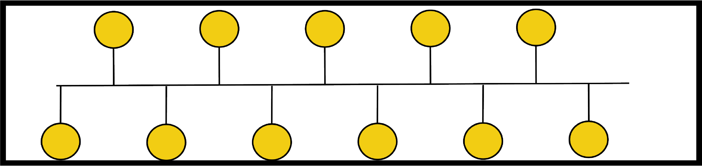
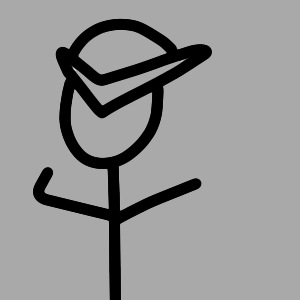
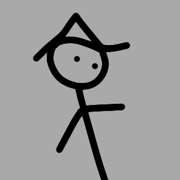
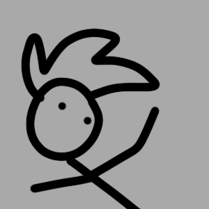
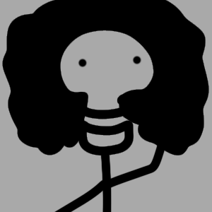

Check out our NPC time-line, and see how NPCs started, the first innovations made in NPC technology, and what NPCs could look like in the future.

We’re passionate about NPCs the characters that bring worlds to life. Whether they’re guiding players, telling stories, or just standing awkwardly in the corner, NPCs make games feel alive. Our goal is to explore, create, and celebrate NPCs in all their forms from funny and quirky to smart and immersive. We share ideas, resources, and inspiration for anyone who loves building better game worlds. Because every great world needs unforgettable NPCs.



